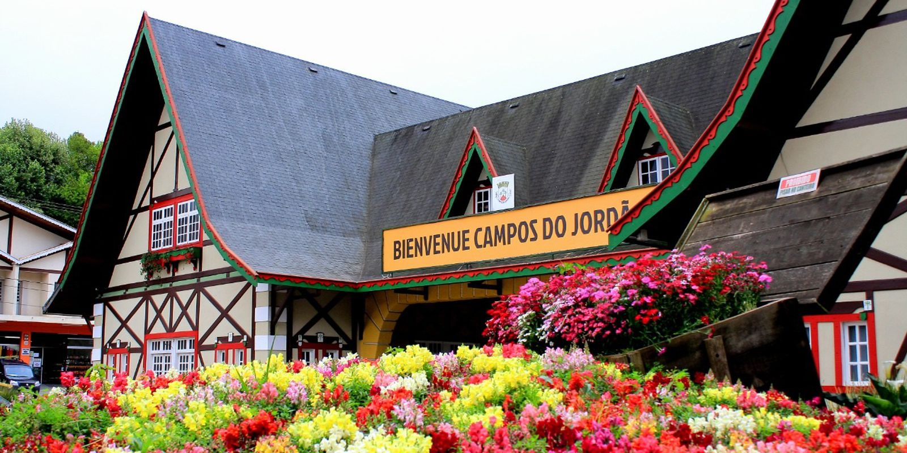
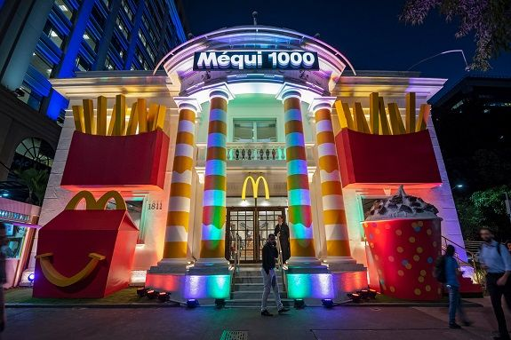
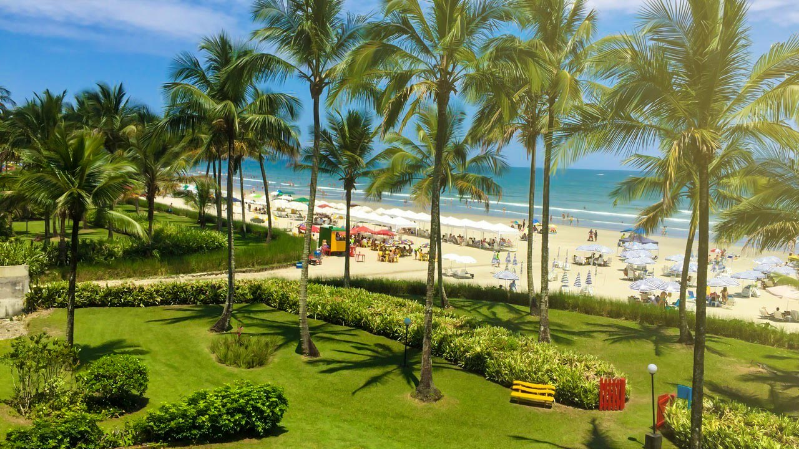

Campos do Jordão é um município na Serra da Mantiqueira, no Brasil, e faz parte do estado de São Paulo.
Campos

Rede de fast-food tradicional conhecida por ter ótimos hambúrgueres e batatas fritas.
MC

A Riviera de São Lourenço é um empreendimento litorâneo moderno com apartamentos, condomínios e resorts situado na Praia de São Lourenço, que tem uma bela faixa de areia e é ótima para nadar e surfar.
PRAIA- MC 1000
- Terraço Itália
- Skye Bar
- Campos do Jordão
- Pico do Jaraguá
- Riviera de São Lourenço
- Hopi Hari
- Aquário SP